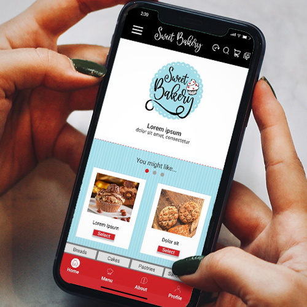
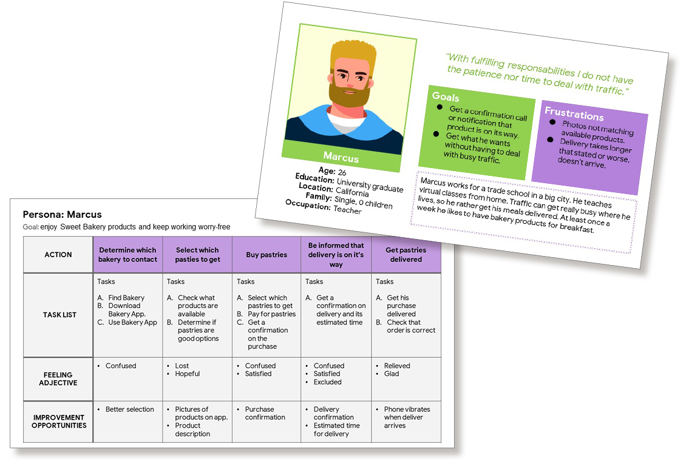
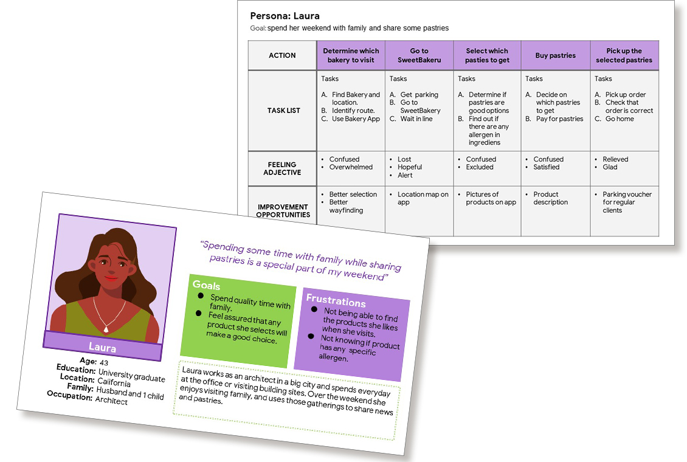
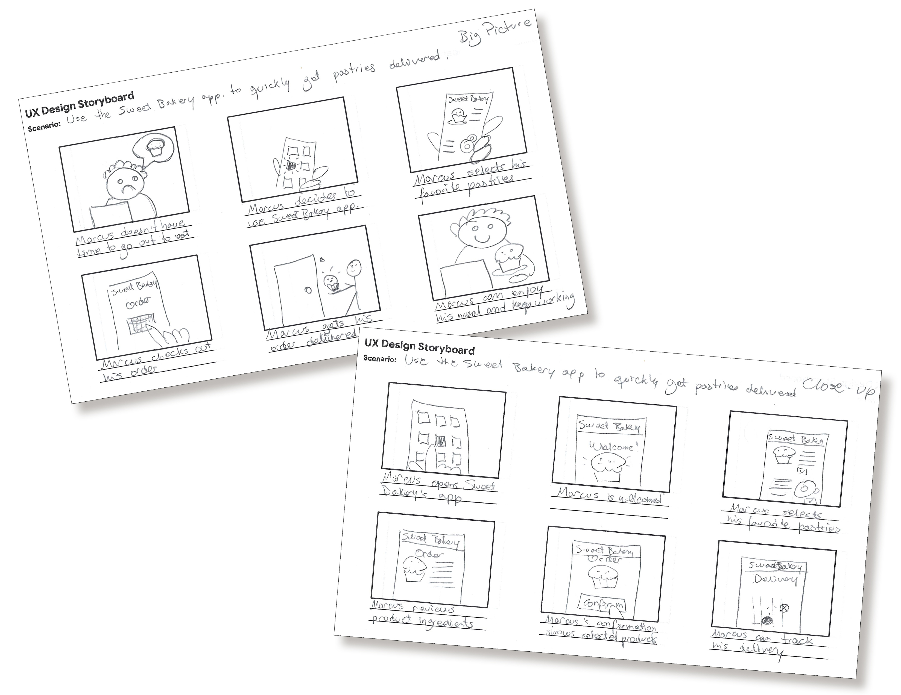
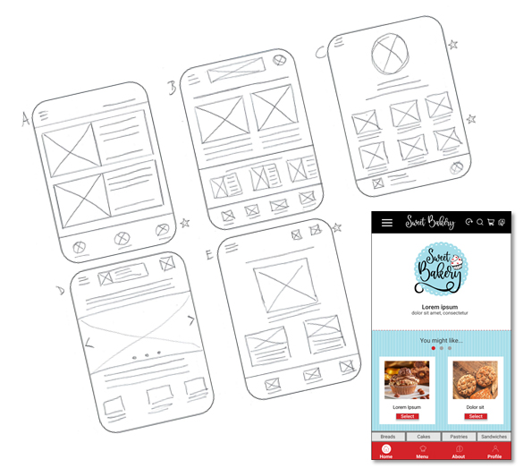
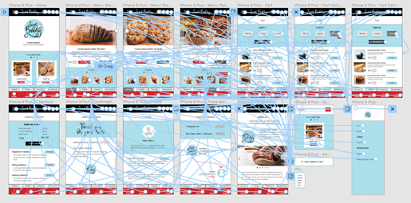
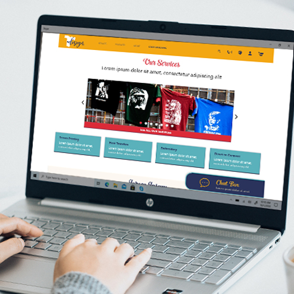
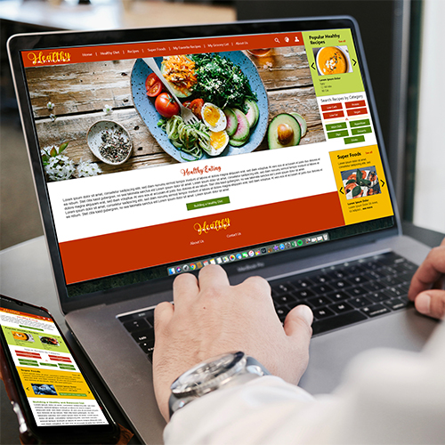

<!-- Main Content -->
<div id="main">
    <div id="container-btm" class="container">
        <section id="blue_bk">
            <div id="prtfolio_header">
                <p></p>
            </div>
            <br>

            <!-- 123 Menu -->
            <div id="mini-menu_red">
                <span class="mini-link" id="ux-case-study" onclick="loadContent('prtf_ux01_SweetBakery'); setActive(this)">1</span>
                <span class="mini-link" id="ux-case-study" onclick="loadContent('prtf_ux02_TDesign'); setActive(this)">2</span>
                <span class="mini-link" id="ux-case-study" onclick="loadContent('prtf_ux03_HealthyPatterns'); setActive(this)">3</span>
              </div>
        

            <!-- Project -->
            <div class="projBak">
                <br>
                <h3 class="projHeader">Sweet Bakery</h3><br>
                
                <p>Dedicated App</p>
                <br>
                <div class="projTxtA">
                    <h4 class="projHeader">The product</h4>
                    <p class="projTxt">Sweet Bakery is located on the suburbs of
                        a metropolitan area. Sweet Bakery is developing a new app
                        to attract customers and help them order online so they
                        can skip in-store lines. Patrons place orders for pick-up,
                        delivery or for in-store consumption.
                    </p>
                    <br>
                    <h4 class="projHeader">My role in the project</h4><br>
                    <p class="projTxt">&nbsp; &nbsp;
                        Plan and conduct user research and competitor analysis.</p>
                    <p class="projTxt">&nbsp; &nbsp;
                        Create user stories and personas.</p>
                    <p class="projTxt">&nbsp; &nbsp;
                        User Flow and usability testing.</p>
                    <p class="projTxt">&nbsp; &nbsp;
                        Create paper and digital wireframes.</p>
                    <p class="projTxt">&nbsp; &nbsp;
                        Visual Design, accounting for accessibility and iterating on designs.</p>
                    <p class="projTxt">&nbsp; &nbsp;
                        Low and high fidelity prototyping.</p>
                    <br>

                    <h4 class="projHeader">Duration</h4>
                    <p class="projTxt">2 months</p>
                    <br>
                    <h4 class="projHeader">Project goal</h4>
                    <p class="projTxt">Ideate and design an app for sweet Bakery that will improve ordering experience
                        of its clients
                        by facilitating ordering process and pick up.</p>
                    <br>
                    <h4 class="projHeader">Target audience</h4>
                    <p class="projTxt">Busy workers and commuters that lack the time necessary to make baked goods.</p>
                    <br>
                </div>

                <div class="projTxtB">
                    <h3 class="projSection">Empathize</h3>
                </div>

                <div class="projTxtA">
                    <h4 class="projHeader">Research study details</h4>
                    <p class="projTxt">In order to understand what specific challenges our
                        users might face in the ordering, payment, and checkout process on
                        the new Sweet Bakery app, I conducted interviews and
                        created empathy maps to understand target users and their needs.
                        A moderated usability study was conducted with 5 participants that
                        didn't have time to make baked goods.
                        This allowed us to gain deeper understanding through combining both
                        qualitative and quantitative information. Research showed that
                        convenience was as influential as time for users when deciding to
                        visit a bakery.</p>
                    <br>
                    <h4 class="projHeader">Key challenges or constraints</h4>
                    <div class="myWorkContainer">
                        <!-- Gallery -->
                        <div class="uxMenu_row">
                            <div class="uxKey_column2">
                                <p class="keyTxt"><strong>Time and convenience</strong><br>
                                    Working adults are too busy to spend time making baked goods.</p>
                            </div>
                            <div class="uxKey_column2">
                                <p class="keyTxt"><strong>Tracking</strong><br>
                                    When ordering food online it is import not only to get a confirmation message but
                                    also to be able to track its delivery.</p>
                            </div>
                        </div>
                        <div class="uxMenu_row">
                            <div class="uxKey_column2">
                                <p class="keyTxt"><strong>Accessibility</strong><br>
                                    Platforms for ordering baked goods do not offer language selection nor are they
                                    equipped with assistive technologies.</p>
                            </div>
                            <div class="uxKey_column2">
                                <p class="keyTxt"><strong>Information architecture (IA)</strong><br>
                                    Small images can lead to confusion and text-heavy descriptions are often difficult
                                    to read.</p>
                            </div>
                        </div>
                    </div>
                </div>

                <div class="projTxtB">
                    <h3 class="projSection">Define</h3>
                </div>
                <div class="uxTnIContainer">
                    <!-- Gallery -->
                    <br>
                    <div class="uxImage_woTxt">
                        <p></p>
                        <p></p>
                    </div>
                </div>
                <div class="projTxtA">
                    <h4 class="projHeader">User Journey</h4>
                    <p class="projTxt">Once Personas were created, their particular
                        needs were laid in a Problem Statement. Then mapping user journey's
                        revealed how helpful and convenient would be for users to have access
                        to a dedicated Sweet Bakery app.
                    </p>
                    <br>
                </div>

                <div class="projTxtB">
                    <h3 class="projSection">Ideate</h3>
                </div>

                <div class="projTxtA">
                    <h4 class="projHeader">Storyboards: Initial design concepts</h4>
                </div>
                <div class="uxTnIContainer">
                    <!-- Gallery -->
                    <div class="uxTnI_row">
                        <div class="uxTxt_wImg">
                            <p>
                                Visually describing and exploring user's experience with our app
                                helped understand which elements we needed to add to the
                                user flow. </p>
                        </div>
                        <div class="uxImage_wTxt">

                            <p>
                            </p>
                        </div>
                    </div>
                </div>
                <div class="projTxtA">
                    <h4 class="projHeader"> Sketches or wireframes</h4>
                </div>
                <div class="uxTnIContainer">
                    <!-- Gallery -->
                    <div class="uxTnI_row">
                        <div class="uxImage_wTxt">

                            <p></p>
                        </div>
                        <div class="uxTxt_wImg">
                            <p>
                                Taking the time to draft iterations of each screen of the Sweet Bakery’s
                                app ensured that new and existing customers can access the offered products
                                in a convenient way, while addressing user pain points. I prioritized a quick
                                and easy selection and ordering process to help users save time </p><br>
                        </div>
                    </div>
                    <br>
                </div>

                <div class="projTxtB">
                    <h3 class="projSection">Test</h3>
                </div>

                <div class="projTxtA">
                    <h4 class="projHeader">User testing results</h4>
                    <p class="projTxt">I conducted two rounds of usability studies.
                        Findings from the first study helped guide the designs from wireframes to mockups.
                        The second study used a high fidelity prototype and revealed quantitative and
                        qualitative data showing what aspects of the mockups needed refining.<br>
                        <br>
                    </p>
                    <p class="projTxt"><strong>Round 1 findings</strong><br></p>
                    <ul class="projTxt">
                        <li>Checkout process didn't provide enough information.</li>
                        <li>Participants needed more visual information.</li>
                        <li>Selection process needs to be available at all time.</li>
                    </ul>
                    <p class="projTxt"><br><strong>Round 2 findings</strong><br></p>
                    <ul class="projTxt">
                        <li>Tracking information should be accessible at any time.</li>
                        <li>Daily offers should be on the 'You might like' section.</li>
                    </ul>
                </div>

                <div class="projTxtB">
                    <h3 class="projSection">
                        Prototype</h3>
                </div>
                <div class="projTxtA">
                    <h4 class="projHeader">High-fidelity prototype of final, polished designs</h4>
                </div>
                <div class="uxTnIContainer">
                    <!-- Gallery -->
                    <div class="uxImage_wTxt">
                        <p><br></p>><br></p>
                        <video width="221" height="auto" controls>
                            <source src="images/gallery_ux/SweetBakery/SweetBakery_app.mp4" type="video/mp4"
                                alt="High Fidelity Prototype"><br></p>>
                            <source src="movie.ogg" type="video/ogg">
                            Your browser does not support the video tag.
                        </video>
                        <br><br>
                    </div>
                </div>

                <div class="projTxtB">
                    <h3 class="projSection">Key Takeaways</h3>
                </div>

                <div class="projTxtA">
                    <h4 class="projHeader">Conclusion</h4>
                    <p class="projTxt"><strong>Impact:</strong><br>
                        The Sweet Bakery app's UX design is consistent and perfectly
                        aligned with the Sweet Bakery's purpose of offering a pleasant
                        and fast way for customers to order their products, resulting
                        in an intuitive and user-friendly experience for our users.
                        <br><br>
                        <strong>What I learned:</strong><br>
                        While designing the Sweet Bakery app, I learned that the first
                        ideas for the app are only the beginning of the process.
                        Usability studies influenced each iteration of the app's
                        designs.
                        <br><br>
                </div>

                <div class="projTxtB">
                    <h3 class="projSection">Next Steps</h3>
                </div>

                <div class="projTxtA">
                    <strong>Next steps:</strong>
                    </p>
                    <ul class="projTxt">
                        <li>Conduct another round of usability studies to
                            validate weather the pain points users experienced
                            have been effectively addressed.</li>
                        <li>Conduct more user research periodically in order
                            to determine any new areas of need.</li>
                    </ul>
                    <br>
                </div>
            </div>


            <!-- Menu cont. -->
            <div id="prtfolio_btm">
                <br><br>
            </div>
            <div class="myWorkContainer">
                <!-- Gallery -->
                <div class="uxMenu_row">
                    <div class="uxMenu_column2" onclick="loadContent('prtf_ux02_TDesign')">
                        <div class="uxContainer" style="cursor:pointer;">
                            
                            <div class="uxMenu_middle">
                                <div class="uxMenu_text">
                                    <p class="menu_prevw1">Google Design Challenge</p>
                                    <p class="menu_prevw2"><br>Mobile Website</p>
                                </div>
                            </div>
                        </div>
                        <p style="font-size:14px;">T-Design</p>
                    </div>
                    <div class="uxMenu_column2" onclick="loadContent('prtf_ux03_HealthyPatterns')">
                        <div class="uxContainer" style="cursor:pointer;">
                            
                            <div class="uxMenu_middle">
                                <div class="uxMenu_text">
                                    <p class="menu_prevw1">Google Design Challenge</p>
                                    <p class="menu_prevw2"><br>Dedicated App &amp; Mobile Website</p>
                                </div>
                            </div>
                        </div>
                        <p style="font-size:14px;">Healthy Patterns</p>
                    </div>
                </div>
            </div>
        </section>
    </div>
</div>